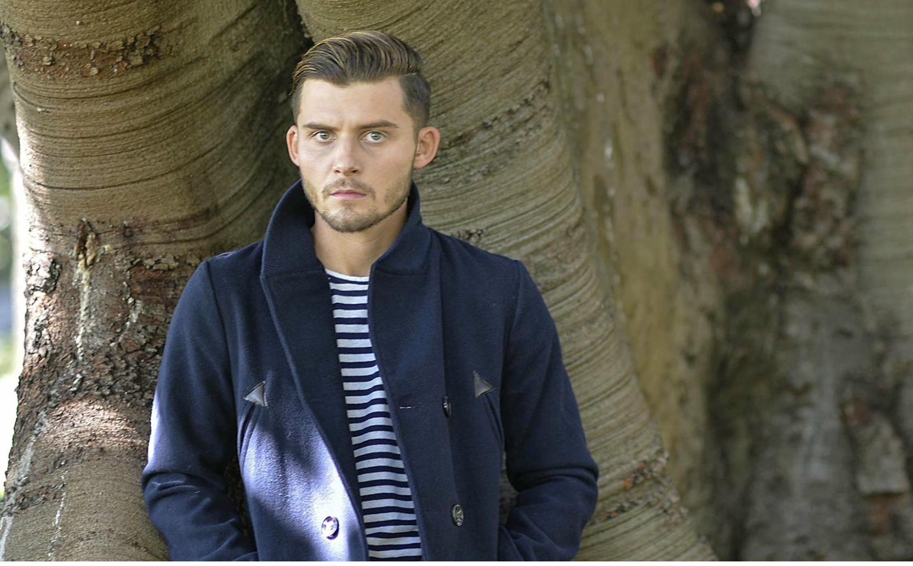
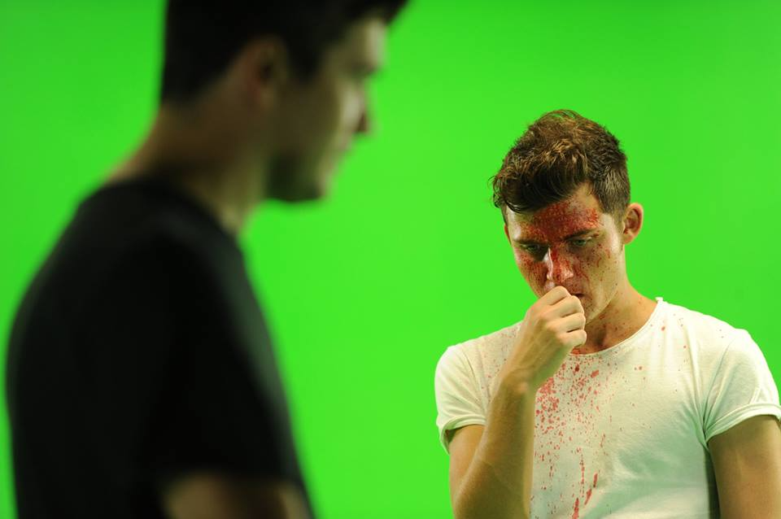

North Perth actor Liam Graham is good at being the bad guy
A profile on Liam's approach to playing complex antagonists, his career trajectory from Perth to international screen work, and the characters that have defined his acting career.
Read Article →
Exclusive Interview: Pop Culturalist Chats with Liam Graham
An in-depth conversation about his role as Tyler in ABC's The Heights, his acting process, and the cultural influences from Scotland, Australia, and the United States that shape his work.
Read Article →
Liam Graham Sparks Burning Kiss
Coverage of Liam's starring role as Max Woods in the Australian noir thriller Burning Kiss, exploring the film's unique visual style and Graham's approach to the complex lead character.
Read Article →
Think Mental Health — Advertising Campaign
Liam appeared in the 2019 Think Mental Health advertising campaign for Western Australia, combining his advocacy for mental health awareness with his screen work.

WA Youth Mental Health & Homelessness Summit
In 2015, Liam collaborated with the Youth Affairs Council of WA to give voice to vulnerable young people by reading case studies at the summit attended by the Minister for Mental Health.
View additional news and coverage on IMDb
IMDb News ↗